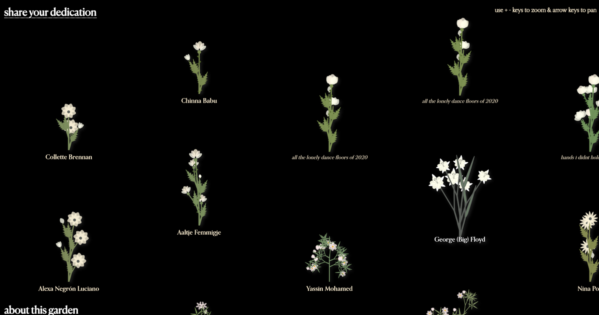
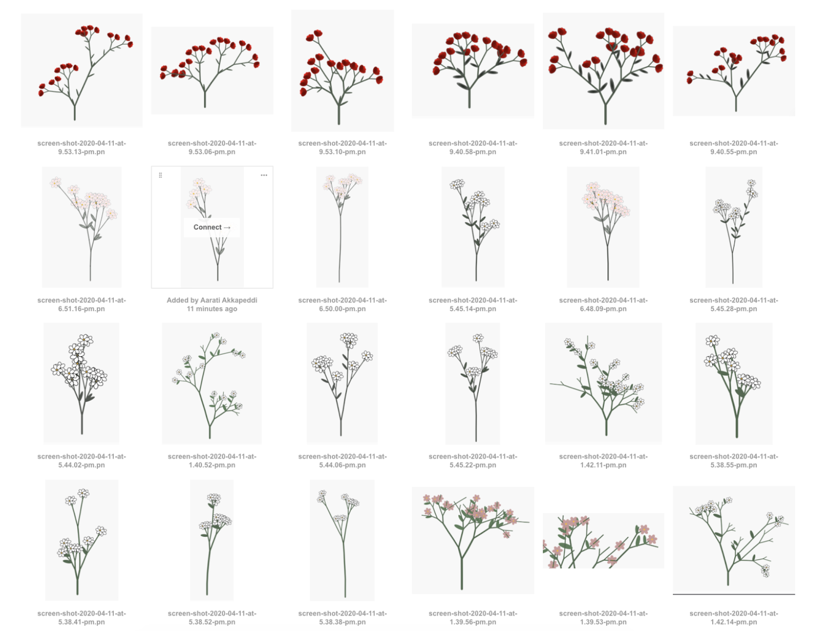
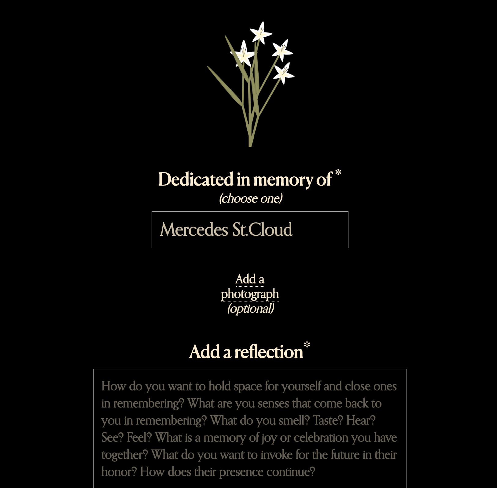

5. Cloud9.garden (*Group Project)
Website, 2020.

The CLOUD9 Memorial Garden is a space for collective remembrance with care, gentleness and respect. Pandemic times limit how we can gather to mourn and remember. During periods of mass loss and isolation, creating intentional spaces to enact and celebrate collective memory is vital. Our community continues to plant new seeds for all of ours that we have lost in this time, due to state violence, due to Covid and due to the continued systems centered on harming Black people, Indigenous people, brown people, low income people, trans people, undocumented people, and marginalized people. We invite you to transform personal grief into collective healing, growth and liberation.
The Cloud9.garden virtual memorial is a collaborative effort between myself, BUFU, Chiara Marcial Martinez, Zai Aliyu, and Melanie Hoff.
*I was primarily responsible for developing a system by which unique memorial flowers could be generated for each dedication. This flower system uses p5js. You can visit the garden at cloud9.garden.
flower generative design iterations
screenshot of dedication submission form